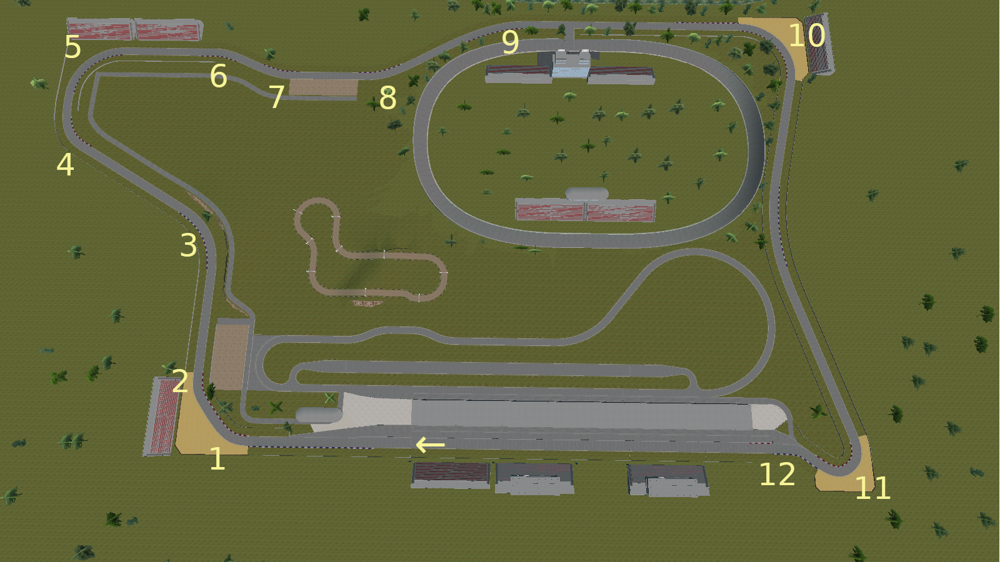

I'd like to extend a warm welcome to everyone for the first week of Formula R's Moonshine Cup. The Moonshine Cup is essentially a high-speed time attack challenge around some of RoR's most famous circuits. The action will be intense as drivers push their machinery to the limit, blazing down the straights then nimbly navigating the corners in an attempt to set the best lap possible. Drivers were presented with the option of MeanMotorsports' MeanMachine Race 400LS, or one of 5 variants of Derbymutt Industries' reproduction Lotus 76/1.
The first week takes us to the iconic F1 Test Track, a mainstay of the RoR motorsports scene since its very inception. This high speed circuit boasts the facilities of a motorsports park, with features like 22 spacious pits, several spectator viewing areas, and 4 additional tracks housed within the main circuit. These include the short circuit, the drag strip, the test oval, and the offroad course.
Here is a track map with the turns and direction of travel labeled:
Some points of interest include:
Also, here is a demonstration lap onboard video kindly provided by our series director, Gigi.
Local driving instructor and race steward Pixel absolutely dominated the event from beginning to end, placing first in qualifying, Single-Round Race, and Three-Round Race. He deftly handled his MeanMachine Race to race times at least 4 seconds clear of the competition. Surprisingly, that large of a gap to the rest of the field is a bit of an issue for him. "It feels great but a bit boring since I didn't have much competition for a while," Pixel said after the event came to a close. "The only way I could've lost was by crashing, which didn't happen."
Second place in the event was claimed by newcomer Zurkhal, who learned quickly and proceeded to lay down some quick laps in the 70-second range. "It feels great!" Zurkhal exclaimed. "However I do have to say, I feel bad for the other racers that finished after me on the 3 lap race. They didn't finish any lap whatsoever, thus affecting their average position in the leaderboards. I hope they can redeem themselves on the next race!"
Among those drivers Zurkhal mentioned would be our series director and local trucker Gigi, who took 3rd place honors. He made a strong first impression with fast laps in the 60-second range. Gigi was quick all event until an untimely DNF on the second lap of the Three-Round thwarted what could have been an overall runner-up finish. Gigi later explained: "Another player spawned a complex vehicle just before I turned in for the last long turn. This caused me to wreck my car and so the race was over for me. We tried to prevent such situations and we failed. We will do better by using a password for the next event."
When asked about how he felt on achieving a 3rd-place overall finish, Gigi simply answered: "I'm satisified with it."
In my qualifying run, I feel as though I overdrove my Lotus 76/1 Electric and made several mistakes, leading to an unrepresentative lap time of 118 seconds, or 1:58. Since RamCharger, another driver and race steward, was present, we decided to complete the Single-Round and Three-Round Races against each other. RamCharger took the second position on the grid due to skipping qualifying, while I took pole for our races. He did decently, posting a time only 9 seconds behind mine without much practice time. Things took a turn for the worse for Ram in the Three-Round, though, as he was only able to complete 1 lap before retiring from the race. "My front left wheel hit the wall and had a seizure, then I couldn't really move [the car] at all," RamCharger later recalled. I managed to push my Lotus to three solid laps in the 80-second range. Although I was sorely outmatched by the MeanMachines, my consistency paid off with a 6th place finish in the Single-Round standings and 4th in the Three-Round standings. Those results brought me a 5th place average finish for the event, a fairly decent start to my Moonshine Cup campaign.
What a start we had with Week 1, or as I was tempted to jokingly call it, the Never-Ending Week! From the beginning, we struggled to get consistent participation, which led to the event being extended for several weeks longer than originally planned. Series director Gigi admitted, "We had quite some trouble getting players motivated for the event, but I think that we all managed to create a vibe for it. So it should work better from now on."
Nevertheless, I thought this first race was a decent showing. We had six entrants to complete both race formats, so there appears to be potential for the Cup moving forward. Pixel displayed quite the dominant form, as he swept all sessions to earn the top spot on the leaderboard. Surprisingly enough, newcomer Zurkhal stormed their way up the leaderboards with some impressive laps in the 70-second range. They could pose a real challenge to the potent Pixel as the Moonshine Cup advances.
To get a better idea of how the community felt about the early title situation, I asked a few community members who they thought could be in a good position for winning the Moonshine Cup. RamCharger, perhaps due to how early the title situation is, replied, "I dunno." Probably based on Pixel's display of racing expertise, Carteirrrr replied, "Uhh, Pixel I guess." I for one eagerly anticipate watching how the title fight unfolds. So far it seems that Pixel, Zurkhal, and Gigi are the early favorites to take the Moonshine Cup.
Another aspect of the race I found intriguing was the car choices. I initially thought that we might have something of a "manufacturer war" between MeanMotorsports and Derbymutt Industries, but such a battle never really came to fruition. Most drivers chose the tried-and-true '60s-styled MeanMachine, while I led the DI campaign alone in the Lotus 76/1 Electric. After the event ended, I got a chance to ask our series director why he thought the "manufacturer war" never really came to be. Gigi explained: "People will choose what's best for them. The MeanMachine is easy to handle. On the other side the Lotus can be the quicker choice, but you have to learn how to control it. I think that Pixel tried that once or twice during the weekends, but he still used the MM."
True to Gigi's observation, F1 Test Track seems better suited to the MeanMachine and its mix of rapid acceleration, stability, and ease of powersliding than to the Lotus 76/1. That is one reason why I'm looking forward to Week 2, which is most likely to be held at the Grünwaldring pending final series director approval. Its rather twisty layout and mixture of medium- and low-speed corners provide a great contrast to the high-speed straights and corners of F1 Test Track. It would be interesting to see how the MeanMachine drivers fare there, as the circuit does not seem quite as suited to that race car. Personally, I'm hoping that the Lotus 76/1 will have a better chance at being competitive, since braking is one of the few areas where the Lotus surpasses the mighty MeanMachine. Hopefully I can bring home a podium finish for Derbymutt Industries, perhaps even a win; who knows?
| Position | Driver | Avg. Finish |
|---|---|---|
| 1 | Pixel | 1 |
| 2 | Zurkhal | 3 |
| 3 | Gigi | 3.5 |
| 4 | Verkan | 4 |
| 5 | Xploder98 | 5 |
| 5 | Carteirrrr | 5 |
| 6 | RamCharger | 6.5 |
| 7 | Greg Salk | 7.5 |
| 7 | PiMonkey | 7.5 |
Pole position: Pixel, 65s (1:05), Mean Machine Race 400 LS
Fastest race lap: Pixel, 61s (1:01), Mean Machine Race 400 LS